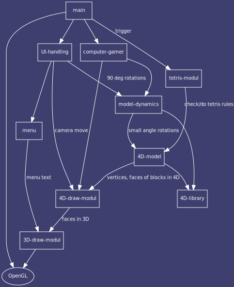
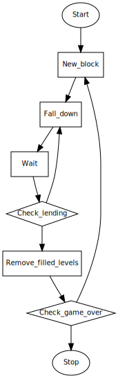

This document is a draft description of the main SW components of 4DTris.

Main - main modul - contains init functions, window ~, event handling. Triggers other moduls.
Menu - State machine for on screen menu. (Main menu, About, Scores, Options, ...)
UI-handling - user interface handling - contains corresponding functions for user interactions which links them to operations in the game model and drawing modul.
4D-draw-modul - Reads the 4D vertex datas from model modul, projects them to 3D and draws them by calling 3D-draw-modul.
3D-draw-modul - wrapper layer to openGL, buffers the facet drawing request, computes z-buffer, and draws with openGL rutines triggered by main modul.
computer-gamer - computes steps for computer player using a template game field.
model-dynamics - queue object movements requested by UI-handling/computer-player. Check movement validity, time/animate movements.
4D-model - stores positions of blocks, objects (set of blocks), checks collisions. Provide functions to move/rotate objects to model dynamics.
tetris-modul - checks the 4D model for filled spaces, reached top space and landed blocks. Erases filled spaces and indicates game over. Assigns isolevel blocks to object.
4D-library - 4D geometry functions: Rotation, Perspective projection to 3D,
Functionality:
Functionality:
Functionality:
4D-model modul is a very simple physical model of the 4D game-hyperspace. It contains hypercube blocks which are components of 4D objects. The blocks of an object are moving together. Blocks in the space are: actual falling object and each levels containing any blocks. Tetris modul creates level objects from iso-level blocks for each level, which can fall together later, when filled level erased below them.
Stored datas:
Collosion check - first simple model: each block contains a sphere with same diameter as hypercube edge length. These spheres are solid, can no section each other. Sphere collosion calculation: distance between blocks center points can not be lower than edge length.
Functionality:

Rotation matrix for plane defined by a1-a3 axles :
| cos x | 0 | - sin x | 0 |
| 0 | 1 | 0 | 0 |
| sin x | 0 | cos x | 0 |
| 0 | 0 | 0 | 1 |
Menu items: